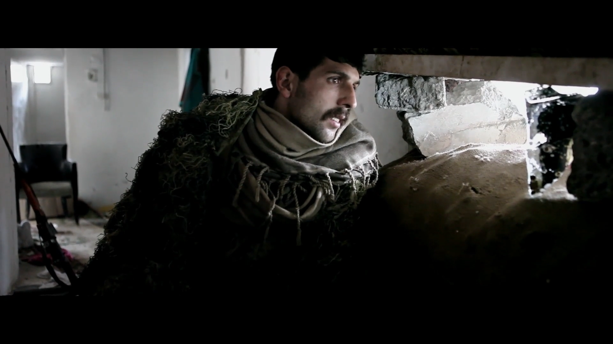
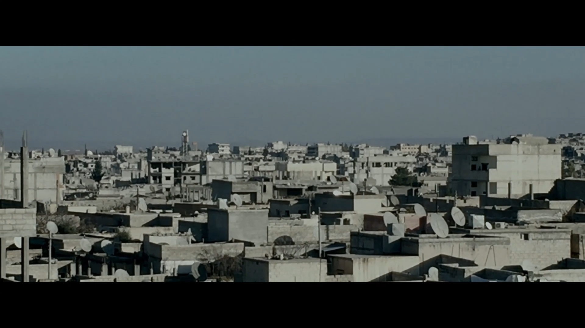
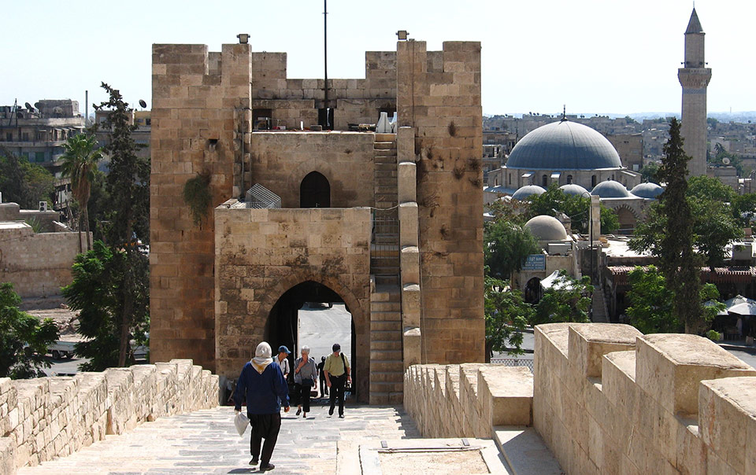

Als de Koerdische Haron een kapsalon binnenloopt, wordt hij met alle egards ontvangen. Hij is sluipschutter van beroep en beschermt met zijn geweer de inwoners van Kobani tegen de allesverwoestende IS. De kapper zit vol vragen, maar Haron geeft weinig prijs. Hij gaat weer aan het werk.
We zien hem achter muurtjes schuilen en af en toe een schot afvuren. Ondertussen reflecteert hij in de voice-over op zijn bestaan als sluipschutter. Hij vertelt over zijn beroep, over zijn dromen en zijn nachtmerries. Sluipschutters hebben een scherp wiskundig inzicht nodig, vertelt hij. Je moet immers de afstand tot het doelwit kunnen inschatten, zien hoe snel het doelwit zich voortbeweegt en rekening houden met de windsnelheid. Sluipschutters zijn het liefst op zichzelf.

Toen de Koerdisch-Nederlandse filmmaker Reber Dosky huiswaarts keerde, bleek zijn filmmateriaal de reis niet te hebben overleefd; dus keerde hij terug naar Kobani, om de film opnieuw te draaien. Het leverde een verstild en empathisch portret op. Voor de mensen in de kapsalon is Haron nog een enigma, voor de kijker heeft de ziel van deze sluipschutter zich geopenbaard.

Op deze pagina geven wij een korte kijk op het leven in een stad tijdens de oorlog.
Voor de slag om Kobani in 2014 was de stad in volle bloei.

Nu is de stad echter grotendeels verwoest en zijn de inwoners begonnen met heropbouwen.
Bekijk de stad, toen en nu, door op de locaties te klikken.